Solicitudes de transporte
Solicitudes por cliente con fecha, ruta y pasajeros, y su avance de borrador a confirmada, planificada, asignada, despachada, en ruta, finalizada y facturada.
Desde la solicitud del cliente hasta la factura: cotiza, firma contratos, asigna bus y conductor, sigue la flota por GPS, controla mantenciones y combustible, y vende tours con reserva en línea desde tu propia página pública.
transportflex.integralflex.clParte de IntegralFlex Suites
TransportFlex es la plataforma de IntegralFlex Suites para empresas de transporte de pasajeros. Cubre el traslado de personal para empresas, los servicios especiales y el turismo. Cada empresa trabaja en su propio espacio, con su marca, su color corporativo y sus usuarios por rol: administración, operaciones, despacho, comercial, flota, finanzas y conductores.
La operación parte con la solicitud del cliente, que pasa a cotización con su flujo de aprobación y se convierte en servicio o en contrato mensual o por servicio. El centro de despacho asigna bus y conductor según disponibilidad y autorización por tipo de vehículo, y sigue cada servicio de planificado a finalizado. La flota y los conductores llevan el control de documentos y licencias por vencer.
Para el turismo, la empresa publica productos y salidas programadas en su página pública, donde el cliente reserva en línea con un abono del 50 % y recibe los datos de la cuenta para transferir. El mapa GPS muestra los vehículos en tiempo real, el módulo de mantenimiento controla planes, órdenes de trabajo e inspecciones, y Finanzas factura servicios y reservas, controla la cobranza y entrega un panel BI con exportación a CSV.
Solicitudes por cliente con fecha, ruta y pasajeros, y su avance de borrador a confirmada, planificada, asignada, despachada, en ruta, finalizada y facturada.
Cotizaciones por servicio con revisión, aprobación interna, envío al cliente, aceptación o rechazo, vencimiento y conversión a servicio.
Contratos mensuales o por servicio con vigencia y alerta de contratos por vencer en los próximos 60 días.
Tablero de servicios por estado con buses y conductores disponibles, alerta de servicios sin bus o sin conductor, despacho y cierre.
Buses, minibuses y vans con patente, capacidad, kilometraje y estado, y control de revisión técnica y documentos vencidos o por vencer.
Conductores con licencia, vencimiento, tipos de vehículo autorizados, exámenes y estado: disponible, en servicio, descanso, licencia médica o vacaciones.
Posición y velocidad de cada vehículo en el mapa, dispositivos registrados por API y eventos recientes.
Planes de mantención por kilometraje, órdenes de trabajo con prioridad, inspecciones, vehículos detenidos y mantenciones vencidas.
Cargas por vehículo con litros, monto y kilometraje, rendimiento km/l calculado automáticamente y alerta de valores anómalos.
Tours, excursiones, circuitos y traslados con duración, precio por adulto, cupos por salida, fotos y salidas programadas con bus asignado.
Página de la empresa con sus tours por zona y servicios para empresas, donde el cliente reserva con un abono del 50 % y el saldo se paga al abordar.
Reservas por canal (web, agencia o interno) con pasajeros, total y estado: pendiente, confirmada, pagada, cancelada, no show o completada.
Facturas desde servicios finalizados, reservas o facturación consolidada del mes, con saldos, vencimientos y exportación a CSV.
Facturado, cobrado y por cobrar, facturación de los últimos seis meses, ventas por línea de negocio, top clientes y facturas vencidas.
Cada empresa con su marca y color, roles y permisos por módulo, verificación en dos pasos y registro de auditoría de cada acción.
Pantallas reales del sistema con la empresa de demostración Andes Transportes: clientes, conductores y vehículos son ficticios.
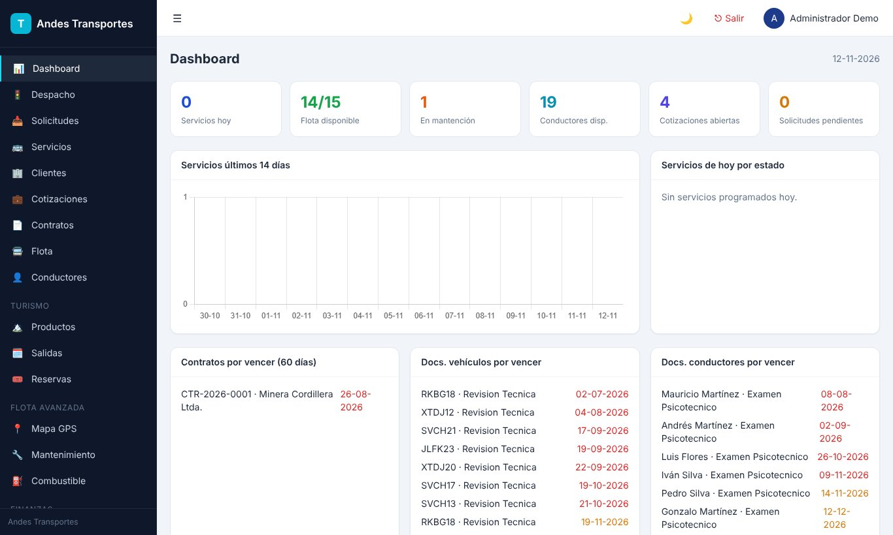
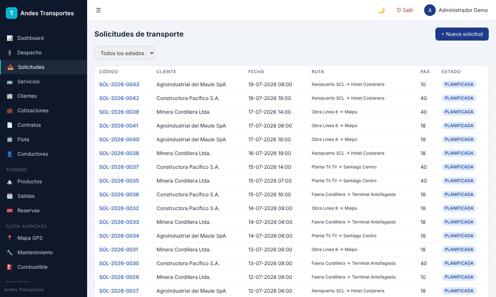
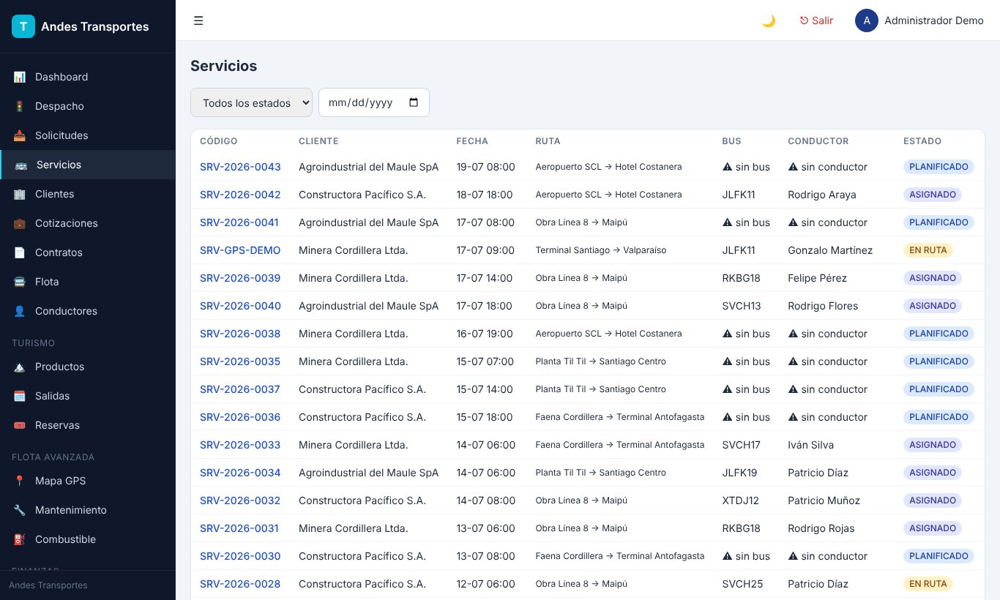
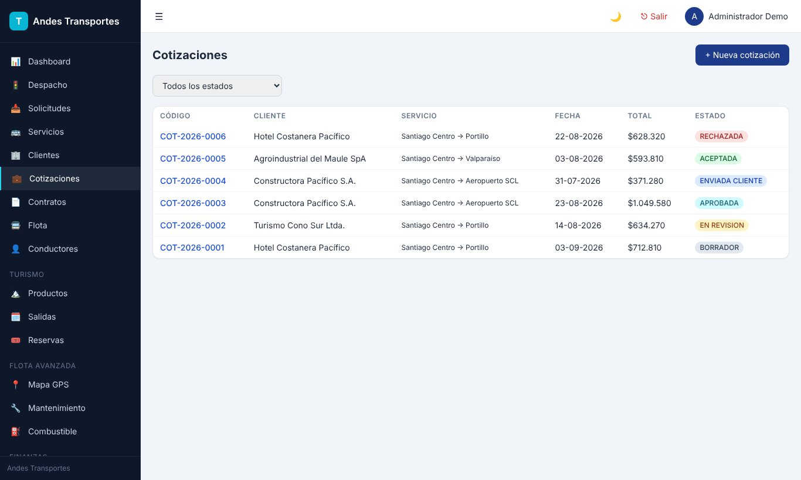
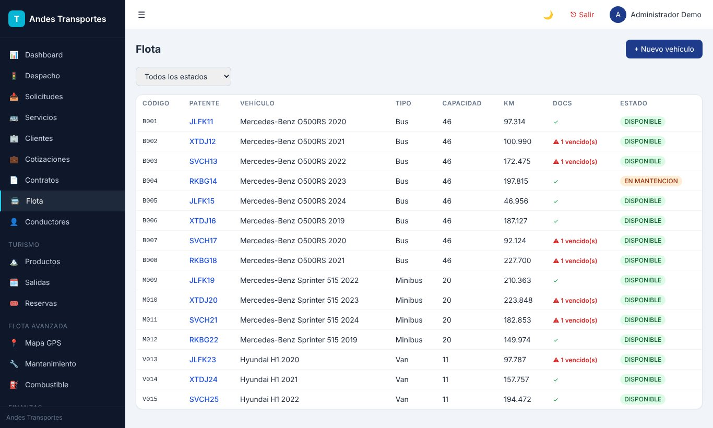
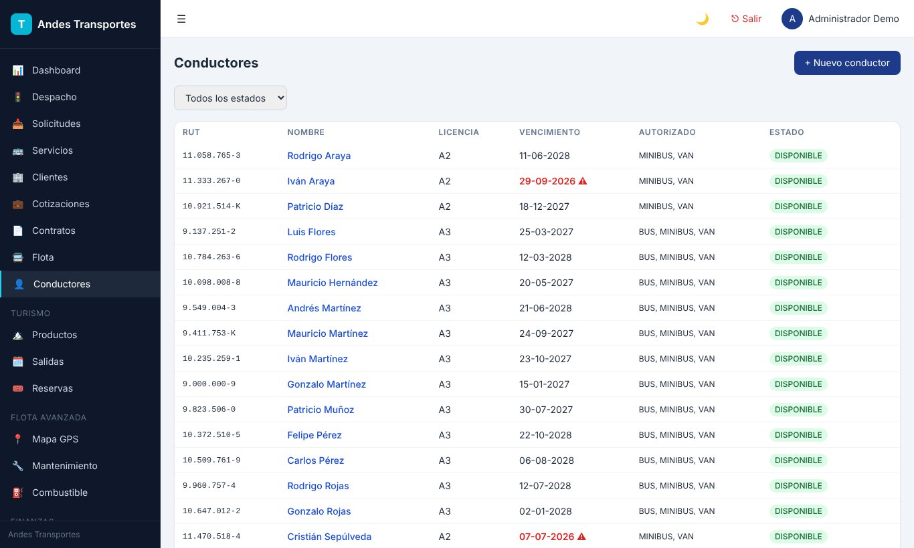
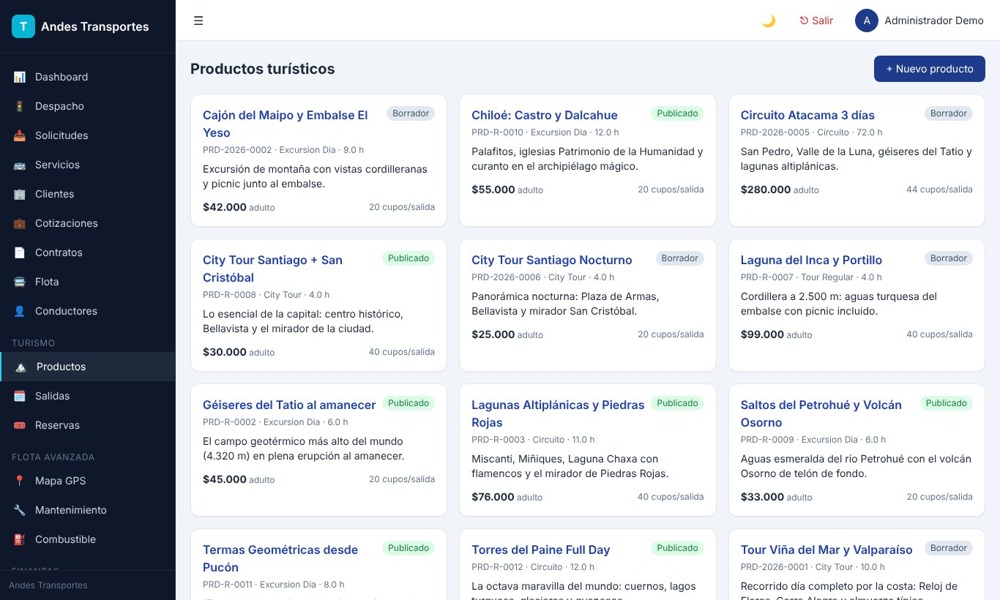
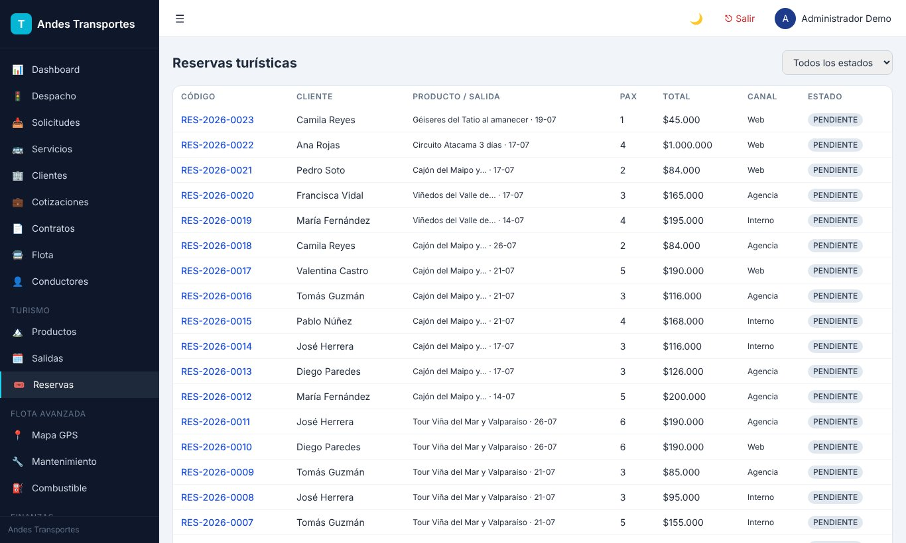
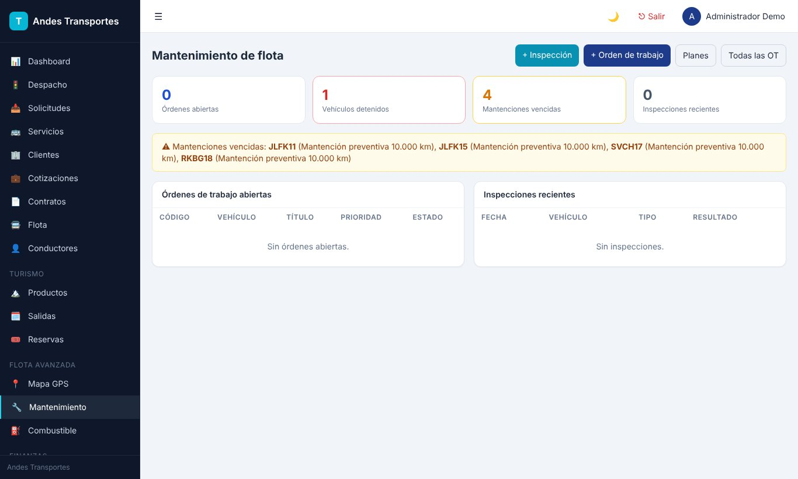
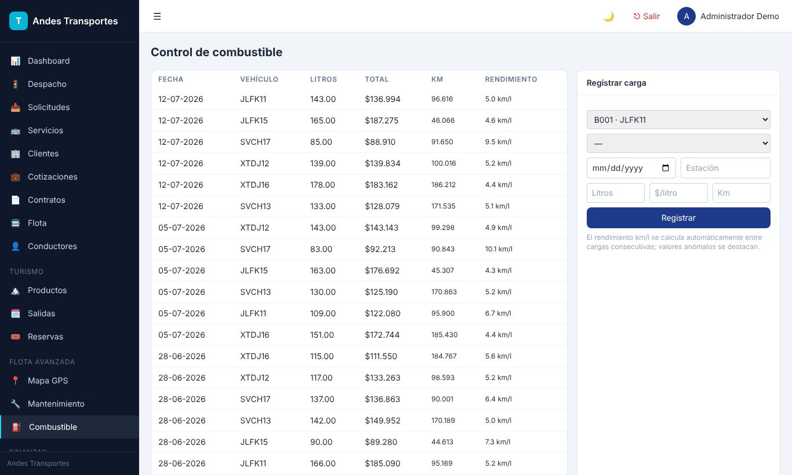
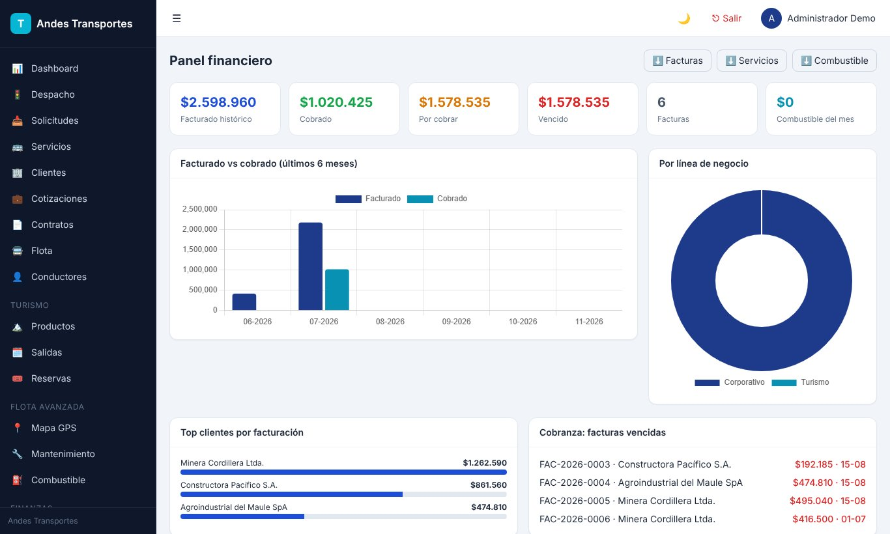
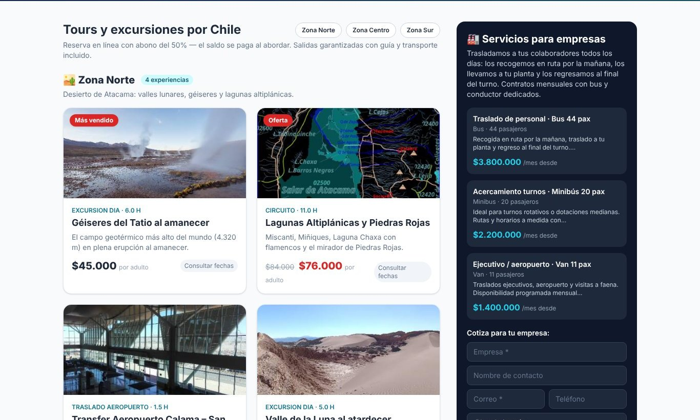
El cliente pide un traslado o reserva un tour en la página pública.
Comercial cotiza, aprueba y convierte la cotización en servicio o contrato.
Despacho asigna bus y conductor disponibles y sigue el servicio por GPS.
Flota controla documentos, mantenciones y combustible de cada vehículo.
Finanzas factura, controla la cobranza y analiza el negocio en el panel BI.
Flask + PostgreSQL + Redis en Docker, web responsiva con modo oscuro
Mapa de flota con OpenStreetMap y API para dispositivos GPS
Página pública por empresa con reservas en línea y abono
Roles y permisos por módulo, verificación en dos pasos y auditoría
Planes desde 0,5 UF por usuario al mes. Escríbenos y coordinamos una demo con tus datos.